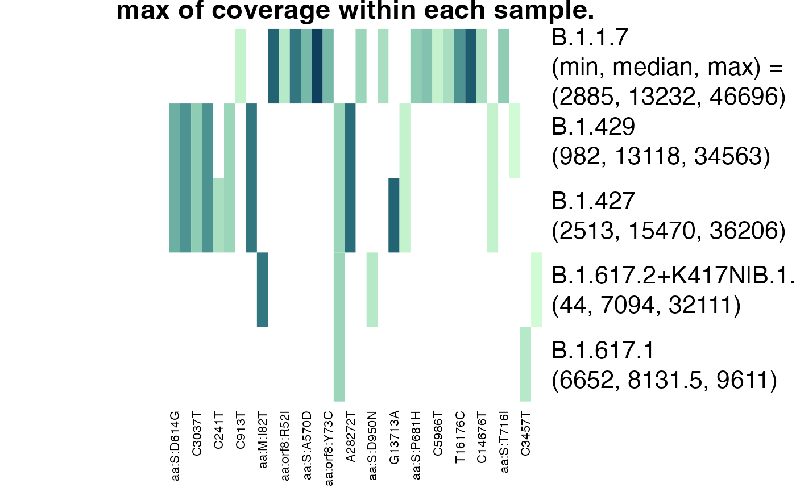

Visualize how lineage definitions were used in analysis
plot_actual_defs.RdVisualize how lineage definitions were used in analysis
Usage
plot_actual_defs(
provoc_obj,
type = "coverage",
fun = mean,
...,
main = NULL,
col = hcl.colors(n = 21, palette = "Dark Mint", rev = TRUE)
)Arguments
- provoc_obj
The result of calling
provoc.- type
"used" for the total number of times a mutation was used in the analysis and "coverage" for information about the coverage. Default
"coverage".- fun
The function used to summarise coverage (when type = "coverage"). Default
mean.- ...
Further arguments passed on to
fun- main
A main title for the plot.
- col
Colours to be used in plotting. Default
hcl.colors(n = 21, palette = "Dark Mint", rev = TRUE). Single-hue sequential colour palettes recommended.
Examples
data(Baaijens)
b2 <- Baaijens [Baaijens$sra %in% unique(Baaijens$sra)[1:30], ]
b2$mutations <- parse_mutations(b2$label)
lineage_defs <- astronomize() |>
filter_lineages(c("B.1.617.1", "B.1.617.2", "B.1.617.2+K417N",
"B.1.427", "B.1.429", "B.1.1.7"))
res <- provoc(
formula = count / coverage ~ .,
lineage_defs = lineage_defs,
data = b2,
by = "sra",
bootstrap_samples = 0)
#> Warning: first element used of 'length.out' argument
#> Warning: one-dimensional optimization by Nelder-Mead is unreliable:
#> use "Brent" or optimize() directly
#> Warning: one-dimensional optimization by Nelder-Mead is unreliable:
#> use "Brent" or optimize() directly
plot_actual_defs(res, type = "coverage", fun = max, na.rm = TRUE)
